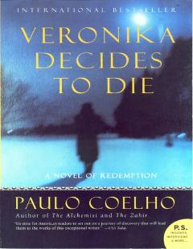

VDHayotning qadr-qimmati va inson ruhiyati haqidagi ta'sirli psixologik roman.
Roman yosh ayol Veronikaning o'z joniga qasd qilishga urinishi va keyinchalik ruhiy kasalxonada uyg'onishi haqida hikoya qiladi. Muallif hayotning mazmuni, jamiyat me'yorlari va inson ruhiyatining murakkabliklarini chuqur tahlil qiladi. Asar o'lim yoqasidagi insonning hayotga bo'lgan yangicha qarashlari va qadriyatlari haqida so'z yuritadi.